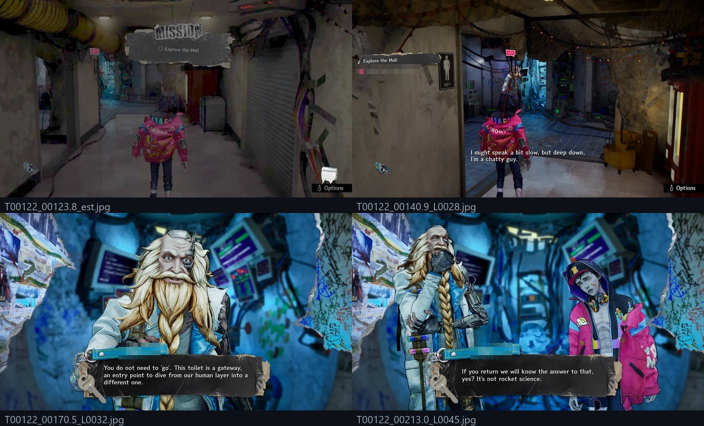
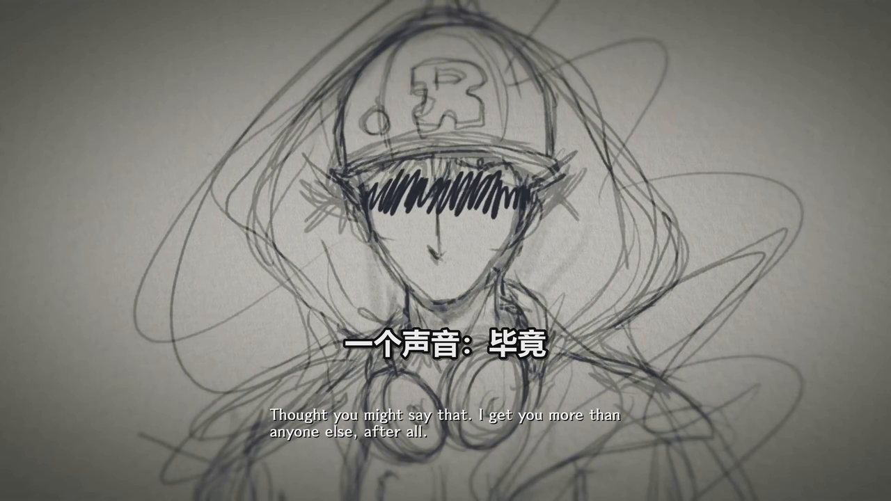
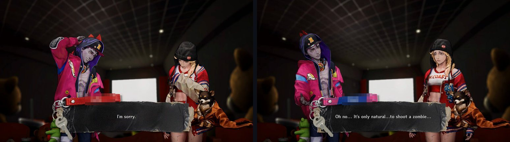
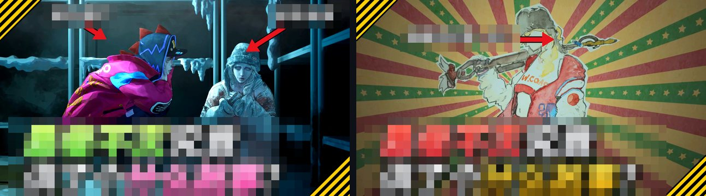

Tan Carlson · Software Engineer · AI agent pipeline
Story factory: one video's run, stage by stage
My story factory turns a recording of a game's story scenes (other players' public uploads, credited in the video's description) into a Mandarin story explainer of about half an hour for YouTube. Claude Code built it to my direction; I start each run and make the calls at its gates. This page follows one real run from October 2026 through its main stages, with the file each stage left behind, so you can see the process and the checks, not only the finished video.
Most watch time so far
- Watch time
- 745 hours from 9,234 views · YouTube Analytics API
- Views
- 9,308 · YouTube Data API
- Watched on average
- 35% · about 9 of its 25 minutes
A Mandarin story explainer of a different game, published in early October 2026, before the story factory below was specified (9 Oct). It was made with an earlier, more hand-run version. Claude Code agents researched the game; a writer agent drafted the script; three checker agents reviewed it for facts, house rules and fit with the footage; an agent wrote the render script; and two QA passes checked picture and audio. I picked the game, approved the script, asked for the video and its thumbnail to open on the female lead, and published it. That version had no act-by-act reading of the footage by agents, no question sheet, no shared script lint (only a one-off validator written for that script) and no evidence audit. So the case file below follows a newer run that went through all of the current stages.
Read 30 Oct 2026, from publishing to that day.
The run on this page

- The video
- A Mandarin story explainer of about half an hour, about a game released in 2026. Published October 2026.
- What the agents read
- A 4:04:58 recording, as 3,259 caption lines and 1,764 still frames, in 226 scenes and 8 acts.
- Views
- 74 · YouTube Data API
- Watch time
- 5.0 hours from 59 views; 17.8% of the video watched on average · YouTube Analytics API
All numbers read on 30 Oct 2026, from publishing to that day. Analytics runs a few days behind the public view counter, which is why the two view counts differ. This video is newer and much smaller than the one above; it is here because its run went through all of the current stages.
The run, stage by stage
Purple = Claude Opus agents, blue = scripts, gold = me. File paths are relative to the title's run folder.
1 Prepare the footage scripts
Scripts prepare the recording first. They take YouTube's automatic captions of the recording as the dialogue track (3,259 lines), split it into 226 scenes across 8 acts, and sample 1,764 still frames, each named by scene, time and dialogue line. Captions mishear words and carry no speaker names, and the agents never hear the audio or see motion, so the frames carry the proof: the game's own subtitles and name tags are visible in them. The scripts also crop candidate faces for a character list.

_est is the scene's establishing shot. Name tags, and a quest line that names a character, are pixelated.2 Gate G0: the question sheet agentsme
Before any agent reads the acts, Opus agents turn the captions and face crops into a character list and a question sheet, and the run stops until I reply. The sheet asks me to confirm names and spellings, then six questions: whose story it is, what a stranger must understand by the end, which reveal is the climax, how much to spoil, how many characters to name, and which narration style fits. Each question comes with a suggested answer and the dialogue lines behind it.
understand/bank/G0_sheet.md · item A4 (names replaced by roles)
"unknown_1: the voice that tempts [the hero] in [the planet's core] over pencil sketches (L3048–L3073, 3:46:17) is not named. My guess is [the villain]'s mind inside [the hero], or [the hero]'s own other self. Whose voice is it?"
understand/bank/g0_owner_reply_2026-10-23.md · my reply, verbatim except the names
"ok to all. A3: use the Steam zh names [the four official Chinese names]; the rest stay provisional. A4: I don't know whose voice it is; call it 一个声音 and don't guess."

3 Read the acts agents
After my reply, eight Claude Opus readers go through the acts in order, one act each, and build a story bible: who speaks each line, what happens, what causes what, and what is still unclear, with every claim tied to a line id or a frame. The readers are told not to open recaps or wikis, so the reading has to come from the game itself. A final pass writes a ten-sentence story, the cast and the story beats.
understand/story_10.md · sentence 2 of 10 (names replaced by roles)
〔主角〕误吃了〔博士〕收藏的不死鸟之蛋，得到吃掉对手核心就能夺走其能力的本事，博士便请他去地下迷宫吃掉〔反派〕，夺回人类的集体智慧，也许还能让冰冻的女孩复活。[L0199-L0205, L0221-L0223, L0230-L0234, L0270-L0272, L0280-L0282]
[The hero] accidentally eats the phoenix egg [the doctor] kept, and gains the power to take an opponent's abilities by eating its core. The doctor asks him to go into the underground labyrinth, eat [the villain], take back humanity's collective intelligence, and perhaps bring the frozen girl back to life. The bracket lists the dialogue lines that support the sentence.
Then comes a second stop: six points the agents could not settle. For each one, Claude Code pulled the frames or captions and suggested an answer, and I picked an answer for all six before the writing began.
4 Write and lint agentscript
One Opus writer drafts the whole script from the ten-sentence story, the cast and the beats: 240 narration lines, about 8,600 Chinese characters, and 4 holds where the game plays on its own. lint_script.py then runs 30 checks, for example: reported-speech verbs, how each name is introduced, AI-sounding phrasing, narrator questions that never get answered, story order, and evidence beats. A style pass then rewrote 10 lines and 2 hold captions, and the lint ran again.
The writer's draft passed the lint on the first try (0 FAIL, 0 WARN, 2 INFO notes). The FAIL below comes from the next stage, because every fix the audit proposes goes back through the same lint.
audit/…/discarded/…lint.md · line A5_09, as a verifier agent rewrote it
FAIL 博士接着说他弄到了不死鸟的蛋，〔主角〕愣住了，原来蛋有两颗。
"The doctor goes on to say he got the phoenix's egg; [the hero] freezes: there were two eggs."
Rule evidence_relay, as the lint prints it: "FAIL on a clue line with a speech-report verb or a colon (wording fix: say what the game shows, then read it)". A clue line has to point at what is on screen, not retell what someone said.
Cost At the time, fixes were applied all or nothing, so this one line held back the whole batch of 104 changes. (Since 29 Oct, the audit re-applies the batch once without the failing line.)
Fixed 字幕上紧接着一句，博士弄到了不死鸟的蛋，〔主角〕愣住了，原来蛋有两颗。
"The very next subtitle: the doctor got the phoenix's egg; [the hero] freezes: there were two eggs." Claude Code reworded the line, the lint passed, and the batch was applied again.
5 Quiz and evidence audit agents
Quiz. One Opus agent writes 40 questions and an answer key from the raw dialogue and frames only. A second agent answers them from the story bible alone, and a grader compares the two. The result was 38 matches, 2 partial and 0 mismatches. In both partials the bible was right and the key was wrong. In one, the key had read "hand" from the auto-captions where the burned-in subtitle says "head".

Evidence audit. Opus judges check every script line against the dialogue and frames, and Opus verifiers try to overturn each flag and write the smallest fix. A script applies the fixes, the lint re-runs, and a fresh judge re-checks the changed lines. Of 244 lines, 122 were flagged. The verifiers confirmed 107 flags and overturned 15. 98 were fixed automatically, and 9 were left for me: 0 must-fix, 3 should-fix and 6 notes.
audit/…/AUDIT.md · item 5, line A3_09 (names replaced by roles)
Claim 对话框里列着一份名单，〔反派〕手下有四位封了称号的将军。 ("The dialogue box lists a roster: [the villain] has four generals with titles.")
Evidence Line L1151 at 1:28:59: "Among them are four powerful monsters who have been granted titles." The frame at L1150 shows a corkboard pyramid of monster pictures, not a listed roster.
Verdict Overstated (visual), judge confidence low. The audit did not change the line; it listed it for me as a visual doubt.
Fixed 画面上是一块钉满怪兽照片的软木板，〔反派〕手下有四位封了称号的将军。 ("On screen is a corkboard covered in monster photos; [the villain] has four generals with titles.") Before my review, Claude Code checked the frames at one per second and narrowed the wording, and the review package told me.
6 Voice, build, QC, thumbnails scripts
Voice: edge-tts, an online Microsoft neural voice, reads 240 lines (about 29 minutes of speech) at 1.06× tempo. Speech recognition reads the voice track back; it raised 23 warnings, and a listen list went to me. Build: about 32 minutes at 2560×1440 and 30 fps; −16.1 LUFS, true peak −4.1 dBTP; narration starts on the first frame. QC: qc_story.py re-reads the finished file. Its ten checks are below, titled as the report prints them; the short notes after a colon are mine.
| Check | What it checks | Result |
|---|---|---|
| a | Boxed-subtitle assertion | PASS |
| b | zh-row collision scan: 1,040 subtitle rows × 3 frames → 967 clear, 11 touching on-screen text | FAIL |
| c | Render-vs-source integrity diff | PASS |
| d | Spoiler-chip absence | PASS |
| e | Mix and timeline: loudness, music under the voice, first narration at 0.0 s | PASS |
| f | Picture plausibility: duration, 2560×1440, no frozen picture outside holds | PASS |
| g | Residual lists for the human | INFO |
| h | Shot integrity vs source cuts: skipped, no cut list for this source | INFO |
| i | Entities: mention → picture | PASS |
| j | Ledger / HUD / faces / density / legibility / holds: 46 label boxes overlap the HUD zone (43 of them the top band), and 3 subtitle rows lie over burned-in game text in zoomed stills | FAIL |
Overall: FAIL. Before handing over, Claude Code checked the flagged frames by eye. None of check b's 11 rows covers game dialogue. Most of check j's label overlaps are with a HUD band copied from an OCR proposal; the top strips of all 35 zoomed stills show no HUD there, and narrowing the band would mean a full re-render. Check j's 3 rows over game text include the worst case, line A8_18, which covers the boss health bar that its own line mentions. All of it went to me as known issues.
Thumbnails: thumb_framed.py composes them from game frames with a scripted text layout. Nothing in them is AI-generated. By upload day there was a sheet of 9 options to pick from; see stage 7.
7 Gate G1: publish APIme
- I got the review package: the video in six phone-size parts, the QC report, and a review note that offered a fix for A8_18 (re-voice and rebuild, about an hour). I replied "yes, upload - private, with thumbnail #4", so A8_18 stayed as it was.
- My rule for publishing: if the YouTube API can do a step, Claude Code does it and reads the result back; if only YouTube Studio can, Claude Code gives me a short list and I do it by hand. The table below shows how that split for this video.
- After publishing, I picked a new hook-first title, which was applied through the API. The next day I asked for more eye-catching thumbnails, then said the colours still felt low-energy. From the next round I picked a split design, asked for a different frame, and picked its hearts-frame variant. Each change was set through the API and read back.
| Step | Who | How |
|---|---|---|
| Upload the video as private, with thumbnail #4, the title, description, chapters and an English title, then read them back (the served thumbnail matched the file) | Claude Code | YouTube Data API |
| YouTube's copyright check, the game-title field, and checking the AI-content label (the API sets it at upload but does not return it) | Me | YouTube Studio; the API does not cover these |
| Make the video public, after the Studio steps | Me | YouTube Studio, the same day |
| The new title, then the new thumbnails, each read back | Claude Code, on my picks | YouTube Data API |
| 33 Shorts of 37–44 seconds made from this video's script and footage (by 30 Oct): upload each, schedule it to go public about 20 minutes later, read it back, and check it is live | Claude Code, after my yes to each upload | YouTube Data API |
| Link each Short to this video (the related-video field) | Me | YouTube Studio; the API does not cover it |

Test run
The video factory's test suite (a few files cover neighbouring tools) was run on 30 Oct 2026, on the laptop that made this video: 21 unittest files under Python 3.13.15, one process per file, about 5 minutes in all. 1,413 tests: 1,410 passed, 2 failed, 1 skipped. This tests the code as of 30 Oct, not the exact version that built this video.
| File | Tests | Result | Time |
|---|---|---|---|
test_audit_evidence.py | 48 | OK | 1.3 s |
test_audit_report.py | 50 | OK | 0.9 s |
test_build_story_holds.py | 5 | OK | 0.2 s |
test_compose_common.py | 80 | OK | 11.5 s |
test_compose_devices.py | 35 | OK | 118.3 s |
test_compose_gloss.py | 6 | OK | 0.2 s |
test_compose_ledger.py | 49 | OK | 38.8 s |
test_compose_plan_identity.py | 3 | OK | 1.2 s |
test_compose_rules.py | 186 | OK | 0.4 s |
test_compose_story.py | 96 | OK | 17.3 s |
test_compose_subs.py | 193 | 1 failure | 23.7 s |
test_dash_split.py | 6 | OK | 0.4 s |
test_entity_frame_check.py | 38 | OK | 0.2 s |
test_entity_lint.py | 114 | OK | 15.5 s |
test_footnote_audit.py | 47 | OK | 0.5 s |
test_lint_script.py | 133 | OK | 0.3 s |
test_nexus_popularity.py | 23 | OK | 0.1 s |
test_qc_compose.py | 151 | OK | 30.0 s |
test_readback.py | 56 | OK | 2.6 s |
test_stitch_donors.py | 33 | OK, 1 skipped | 35.3 s |
test_write_guards.py | 61 | 1 failure | 4.0 s |
- The failure in
test_compose_subs.pyis a known open item. The detector that decides when a subtitle needs a dark halo catches 31 of 38 cues that two blind labelling passes (one by Claude Code, one by a fresh Opus agent) marked as bright: 0.82, against a bar of 0.90. Changing the threshold is my decision and still pending, and the labels are not changed to make the test pass. - The failure in
test_write_guards.pyis the test doing its job. A script added on 29 Oct uses the guard against unsafe file writes but was never added to the test's scan list. That fix has not been made yet. - The skip is the local speech-recognition path, which runs only when an environment variable turns it on. A 22nd file,
test_shim_voices.py, is a manual end-to-end check that needs a running voice server, so it is not part of the suite.
Who did what
Me
- Set the house rules the pipeline follows, for example that narration starts on the first frame (QC checks it), and approved changes to the pipeline.
- For this video: picked the game and the footage to work from, and said yes to the download.
- Answered G0: use the official Chinese names from the game's store page, and "call it 一个声音 and don't guess".
- Picked answers for the six points the agents could not settle.
- Said "yes, upload" without the A8_18 fix, picked the thumbnail, did the Studio-only steps and published the video myself.
- Said yes to each Short upload and linked each Short to the video in Studio.
- After publishing: picked the new title, asked for more eye-catching thumbnails, and picked the final one.
Claude Code and its agents
- Built the pipeline to my direction: the scripts, the agent workflows, and the lint, audit and QC checks.
- Ran the stages of this video: the question sheet, the reading, the script, the quiz and audit, the voice, the build, the QC, the thumbnail options, the private upload with its thumbnail and metadata through the YouTube Data API, the later title and thumbnail changes through the API, and the read-backs.
- Made 33 Shorts from the video's script and footage and published them through the API: each uploaded, scheduled to go public, read back and checked live.
- Did the frame checks behind the review points and the narrowed lines shown above.
I did not write the pipeline's code or read the four hours of footage. My part is the decisions on the left.